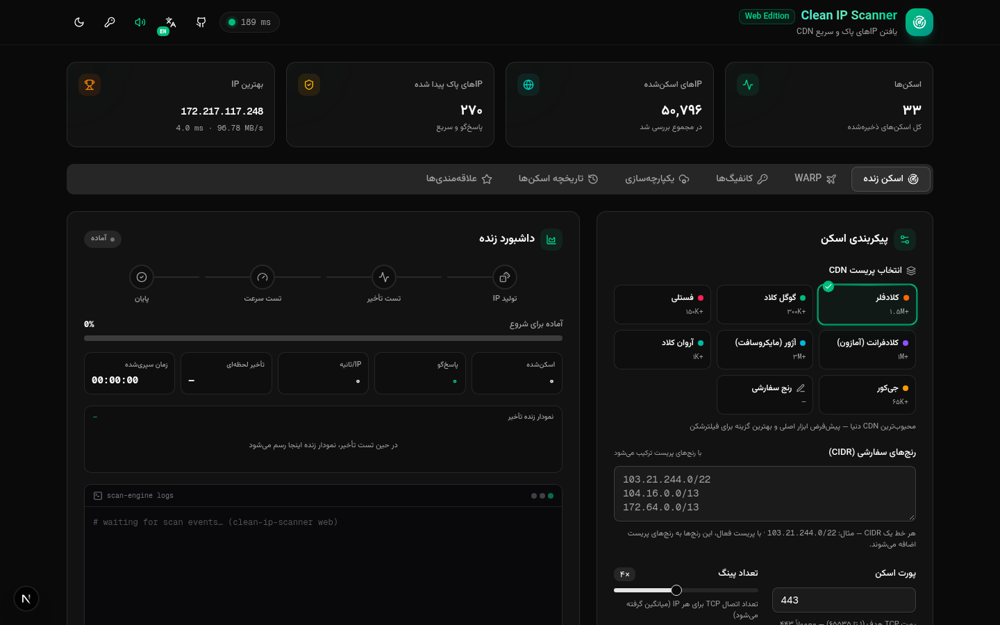
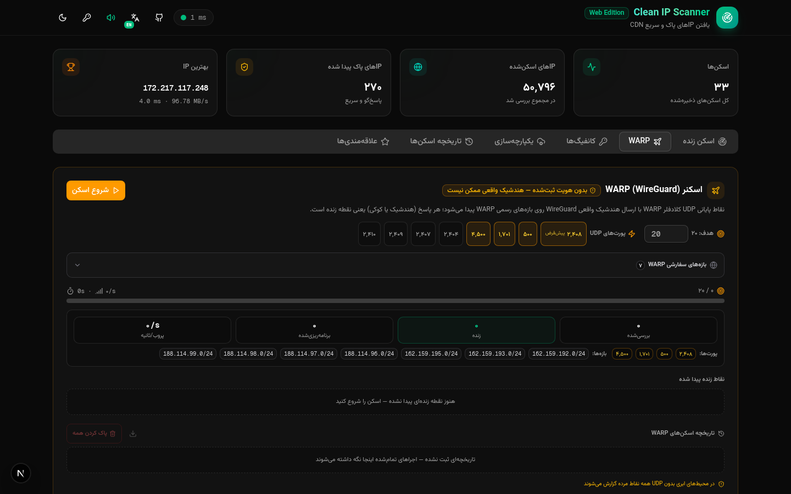
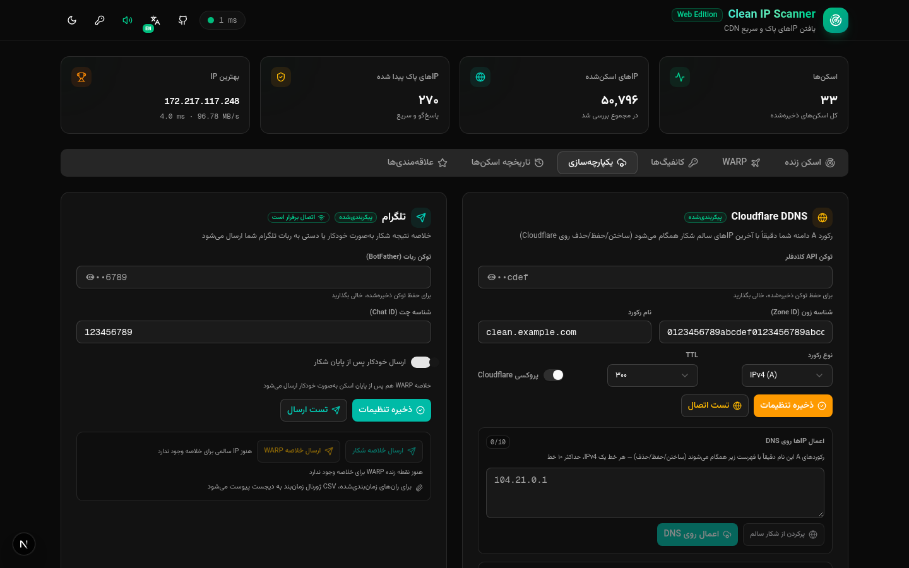
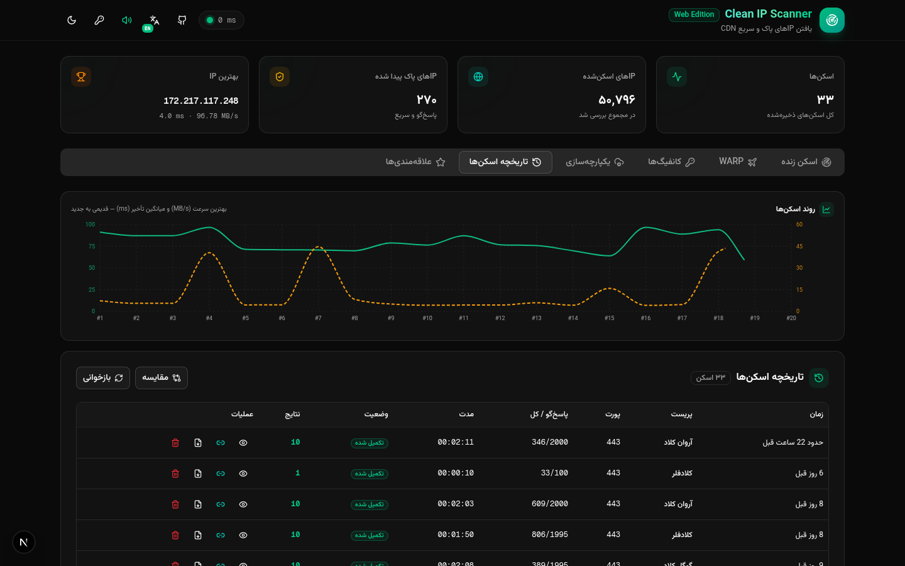

📡
اسکنر زندهLive scanner
اسکن تأخیر TCP/TLS با ماتریس پورت، سطوح تأیید و کنترل همزمانی.TCP/TLS latency scanning with a port matrix, verify levels and concurrency control.
دفترچه راهنمای کامل Clean IP Scanner — از نصب تا شکار خودکار، WARP، تلگرام و عیبیابی؛ قدمبهقدم و مصور. The complete illustrated handbook for Clean IP Scanner — from installation to automated hunting, WARP, Telegram and troubleshooting, step by step.
اسکن زنده، شکار، زمانبندی، هشدار و خروجی — بدون هیچ سرویس ابری. Live scan, hunt, schedule, notify and export — with zero cloud services.
اسکن تأخیر TCP/TLS با ماتریس پورت، سطوح تأیید و کنترل همزمانی.TCP/TLS latency scanning with a port matrix, verify levels and concurrency control.
کلادفلر، گوگل کلاد، فستلی، کلادفرانت، آژور، آروان و جیکور + رنج سفارشی.Cloudflare, Google Cloud, Fastly, CloudFront, Azure, ArvanCloud, Gcore + custom CIDR.
منابع زنده (SPF، رنج API، RIPE…) با گزارش سلامت و دانشنامه داخلی.Live sources (SPF, API ranges, RIPE…) with health reports and a knowledge base.
شکار دورهای سمت سرور با ژورنال ماندگار و بازتاب تنظیمات هر اجرا.Server-side recurring hunts with a persisted journal and per-fire settings echo.
پروب اندپوینتهای کلادفلر WARP با نرخ زندهبودن و تاریخچه.Cloudflare WARP endpoint probing with alive-rate and history.
گزارش دستی یا خودکار با پیوست CSV ژورنال برای اجراهای زمانبندیشده.Manual or auto-on-finish reports, auto-attaching the journal CSV for scheduled runs.
جستوجو، فیلتر، بازههای زمانی و خروجی CSV تککلیکی از هر جدول.Search, filter, time ranges and one-click CSV export from every table.
انگلیسی پیشفرض با چیدمان LTR؛ فارسی راستبهچپ با یک کلیک — انتخاب شما ذخیره میشود.English-first with LTR layout; full RTL Persian one click away — your choice is remembered.
یک ابزار وب کاملاً محلی برای پیدا کردن IPهای «پاک» — یعنی IPهایی که سریعاند، پاسخ میدهند و برای عبور از فیلترینگ یا اتصال به سرویسهای CDN مناسباند. همهچیز روی سیستم خودت اجرا میشود: دیتابیس لوکال است، اسکن لوکال است و هیچ دادهای جایی ارسال نمیشود. A fully local web tool for finding clean IPs — fast, responsive addresses that work well with CDNs and circumvention setups. Everything runs on your machine: the database, the scans, the scheduler. Nothing ever leaves your box.
رابط کاربری دوزبانه است (انگلیسی پیشفرض و فارسی راستبهچپ با یک کلیک) و موتور اسکن یک سرویس مستقل Bun است که با socket.io به رابط وصل میشود — به همین دلیل پیشرفت اسکن در لحظه و بدون رفرش دیده میشود.
The UI is bilingual (English by default, full RTL Persian one click away), and the scan engine is a standalone Bun service connected via socket.io — that is why scan progress streams live, without refresh.
پیشنیاز فقط Bun نسخه ۱.۱ به بالاست. مخزن را کلون کنید و چهار دستور زیر را اجرا کنید: The only prerequisite is Bun 1.1+. Clone the repo and run the four commands below:
git clone https://github.com/CheginiSoroush/clean-ip-scanner.git
cd clean-ip-scanner
bun installbun run db:pushbun run devcd mini-services/scan-service
./run.sh
شکارچی IP گوگل رنجهای روبهگوگل را از منابع زنده جمع میکند: رکوردهای SPF، رنجهای API، اسنپشاتهای RIPE و… . سلامت هر منبع گزارش میشود و نتایج در «دانشنامه» ذخیره میماند تا اسکنهای بعدی سریعتر شوند. The Google IP hunter collects Google-facing ranges from live sources: SPF records, API ranges, RIPE snapshots and more. Source health is reported and results persist in a knowledge base, making later hunts faster.
زمانبان شکار اجازه میدهد شکار بهصورت دورهای و سمت سرور اجرا شود. هر اجرا در «ژورنال» ثبت میشود و یک بازتاب تنظیمات فشرده (پروایدور، هدف، دسته، همزمانی، host:port، سرعت، سطح تأیید) کنار نتیجه میماند — حتی بعد از ریاستارت. The hunt scheduler runs hunts periodically on the server side. Every fire is recorded in the journal with a compact settings echo (provider, target, batch, concurrency, host:port, speed, verify) — persisted across restarts.
در تب WARP میتوانید اندپوینتهای کلادفلر WARP را پروب کنید: نرخ زندهبودن، تأخیر و تاریخچه هر دسته پروب ذخیره میشود تا روند سلامت شبکهتان را ببینید. The WARP tab probes Cloudflare WARP endpoints: alive-rate, latency and full history per probe batch are stored so you can watch your network’s trend.

در تب یکپارچهسازی، توکن ربات و شناسه چت را وارد کنید تا خلاصه نتایج به تلگرامتان برسد — دستی یا خودکار پس از پایان هر اسکن. اجراهای زمانبندیشده بهطور خودکار CSV ژورنال را هم پیوست میکنند.
In the Integrations tab, enter your bot token and chat ID to receive result digests — manually or automatically after each scan. Scheduled runs auto-attach the journal CSV via sendDocument.
DDNS کلادفلر هم بهترین IP پاک را مستقیم روی رکورد A دامنهتان میگذارد؛ دستی یا خودکار با آستانه حداقل IP. Cloudflare DDNS pushes the best clean IP straight to your domain’s A record — manually, or automatically with a minimum-IP threshold.


| Symptom | Fix |
|---|---|
| UI shows “disconnected” | Start the engine: cd mini-services/scan-service && ./run.sh |
| Scan returns nothing | Lower concurrency, raise timeout, try another port (443 → 2053/2083/2087) |
| Telegram: 502 Unauthorized | Bot token is invalid — regenerate from @BotFather and re-enter chat ID |
| WARP alive-rate = 0 | UDP is blocked on your network — environmental, not a bug |
| Database errors on boot | Run bun run db:push again |
نه. اسکن، دیتابیس و زمانبان همگی لوکالاند؛ فقط اگر خودتان تلگرام را پیکربندی کنید گزارشها به ربات خودتان میروند.No. Scans, the database and the scheduler are all local; only if you configure Telegram yourself do digests go to your own bot.
اسکن، رنجهای یک پریست CDN را بررسی میکند؛ شکار، رنجهای روبهگوگل را از منابع زنده مییابد و برای همانها اسکن میچیند.A scan probes a CDN preset’s ranges; a hunt discovers Google-facing ranges from live sources and builds scans on top of them.
بله — هر دو بخش روی Bun اجرا میشوند که برای هر سه سیستمعامل نسخه دارد.Yes — both parts run on Bun, which ships for all three platforms.
فایل db/custom.db را کپی کنید — کل تاریخچه، تنظیمات و ژورنال همانجاست.Copy db/custom.db — all history, settings and the journal live there.
MIT — آزاد برای استفاده شخصی و تجاری با ذکر نام نویسنده.MIT — free for personal and commercial use with attribution.